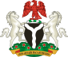

Nigeria (/naɪˈdʒɪəriə/), officially the Federal Republic of Nigeria, is a country in West Africa, bordering Niger in the north, Chad in the northeast, Cameroon in the east, and Benin in the west. Its coast in the south is located on the Gulf of Guinea in the Atlantic Ocean. The federation comprises 36 states and 1 Federal Capital Territory, where the capital, Abuja, is located. The constitution defines Nigeria as a democratic secular state.
Nigeria has been home to a number of ancient and indigenous kingdoms and states over the millennia. The modern state originated from British colonial rule beginning in the 19th century, and took its present territorial shape with the merging of the Southern Nigeria Protectorate and Northern Nigeria Protectorate in 1914. The British set up administrative and legal structures while practising indirect rule through traditional chiefdoms. Nigeria became a formally independent federation in 1960. It experienced a civil war from 1967 to 1970. It thereafter alternated between democratically elected civilian governments and military dictatorships until it achieved a stable democracy in 1999, with the 2011 presidential election considered the first to be reasonably free and fair.
Nigeria is often referred to as the "Giant of Africa", owing to its large population and economy. With 186 million inhabitants, Nigeria is the most populous country in Africa and the seventh most populous country in the world. Nigeria has the third-largest youth population in the world, after India and China, with more than 90 million of its population under age 18. The country is viewed as a multinational state as it is inhabited by 250 ethnic groups, of which the three largest are the Hausa, Igbo and Yoruba; these ethnic groups speak over 500 different native languages and are identified with a wide variety of cultures. The official language of Nigeria is Nigerian English, chosen to facilitate linguistic unity at the national level. Nigeria is divided roughly in half between Christians, who live mostly in the southern part of the country, and Muslims, who live mostly in the north. A minority of the population practice religions indigenous to Nigeria, such as those native to the Igbo and Yoruba ethnicities.
Major cities
City
Population
Lagos
8,048,430
Kano
3,931,300
Ibadan
2,559,853
Benin city
1,147,188
Port harcourt
1,005,904
Nigeria is divided into thirty-six states and one Federal Capital Territory, which are further sub-divided into 774 Local Government Areas (LGAs). In some contexts, the states are aggregated into six geopolitical zones:
North West
North East
North Central
South East
South South
South West
As of the 2006 census, Nigeria has eight cities with a population of over 1 million people (from largest to smallest): Lagos, Kano, Ibadan, Benin City and Port Harcourt. Lagos is the largest city in Africa, with a population of over 12 million in its urban area.
Flag of Nigeria
The Nigerian coat of arms

Transport:
193,200 km of roads, 15 per cent paved, link all main centres. Some secondary roads are impassable during the rains.
There are around 3,530 km of railway, the main routes running from Lagos to Kano, and from Port Harcourt to Maiduguri, with a branch line from Zaria to Gusau and Kaura Namoda. Much of the network is single-track, and the narrow gauge restricts speed and load-carrying capacity.
Main ports are at Apapa, Tin Can Island, Warri, Sapele, Port Harcourt and Calabar. Ferry services operate along the Niger and Benue rivers and along the coast.
Lagos international airport is 22 km north of Lagos; other main international airports are at Abuja (35 km from the city), Kano and Port Harcourt, and main domestic airports at Benin City, Calabar, Enugu, Jos, Kaduna, Lagos, Maiduguri, Sokoto and Yola.
International relations:
Nigeria is a member of the African, Caribbean and Pacific Group of States, African Union, Economic Community of West African States, Non-Aligned Movement, Organisation of Islamic Cooperation, United Nations and World Trade Organization.
Nigeria hosts the headquarters of the Economic Community of West African States in Abuja.
The country is also a member of the Organization of Petroleum Exporting Countries.
Topography:
Nigeria is a large country, 1,045 km long and 1,126 km wide. It has several important rivers, notably the Niger and its main tributary, the Benue, both of which are navigable. The Niger forms a delta some 100 km wide, running into the sea west of Port Harcourt. In the north-east rivers drain into Lake Chad. The coastal region is low-lying, with lagoons, sandy beaches and mangrove swamps. Inland the country rises to the central Jos Plateau at 1,800 metres. The Adamawa Massif, bordering Cameroon, rises to 2,042 metres at Dimlang (Vogel Peak).
Climate:
Tropical; hot and humid on the coast, with greater extremes of temperature inland and cold nights in the north during December and January. The rainy season is generally March–November in the south and May–September in the north. In the dry season the harmattan wind blows from the Sahara.
Environment:
The most significant environmental issues are rapid deforestation, soil degradation, and desertification.
Vegetation:
Mangrove and freshwater swamps in coastal areas, merging into an area of rainforest, containing hardwoods and oil palms. Moving north, the savannah and plateau regions have grasslands and hardy trees such as the baobab and tamarind. There is semi-desert vegetation in the north-east. In the north, forest depletion has been caused by overgrazing, bush fires and the use of wood as fuel, but there has been government-sponsored planting in an attempt to arrest the southward advance of the Sahara. Oil palms occur naturally and, being valuable, are often spared when forests are cleared. Forest covers nine per cent of the land area, having declined at 3.2 per cent p.a. 1990–2010. Some 76 per cent of forest is savannah woodland, 20 per cent tropical rainforest and four per cent swamp forest. Arable land comprises 40 per cent and permanent cropland four per cent of the total land area.
Wildlife:
The Yankari National Park is an important stopover for migrating birds (some 600 species call there), and also has an elephant population. The Okomo Sanctuary is home to the endangered white-throated monkey. On the grasslands of the savannah are camels, antelopes, hyenas and giraffes. An area of 30,100 sq km is protected (2003), or 3.3 per cent of the land area. In the country as a whole 26 mammal species and 15 bird species are thought to be endangered (2014).
Society
Population density (per sq. km): 188
Life expectancy: 53 years
Population:
173,615,000 (2013); 46 per cent of people live in urban areas and 15 per cent in urban agglomerations of more than one million people; growth 2.6 per cent p.a. 1990–2013; birth rate 41 per 1,000 people (47 in 1970); life expectancy 53 years (40 in 1970).
Nigeria is one of the most ethnically diverse countries. There are some 250 ethnic groups, with the Hausa-Fulani, Yoruba and Igbo making up 70 per cent.
Language:
English (official language), Hausa, Yoruba, Igbo and more than 200 other languages and dialects.
Religion:
Muslims (mainly in the north and west) 50 per cent, Christians (mainly in the south) 40 per cent, and the rest holding traditional beliefs.
Health:
Public spending on health was two per cent of GDP in 2012. Some 64 per cent of the population uses an improved drinking water source and 28 per cent have access to adequate sanitation facilities (2012). There are 18 university teaching hospitals in Nigeria (2014). Infant mortality was 74 per 1,000 live births in 2013 (123 in 1960). In 2013, 3.2 per cent of people aged 15–49 were HIV positive.
Education:
There are nine years of compulsory education starting at the age of six. Primary school comprises six years and secondary six, with two cycles each of three years. Some 80 per cent of pupils complete primary school (2009). The school year starts in September.
By October 2013, the National Universities Commission had accredited 40 federal universities, 38 state universities and 51 private universities, including four federal universities of technology, three federal universities of agriculture and the National Open University of Nigeria.
The longest-established universities are the University of Ibadan (1948); University of Nigeria (Nsukka,1960); Ahmadu Bello University (Zaria,1962); University of Lagos (1962); and Obafemi Awolowo University (Ile-Ife, 1962). The first state university, Rivers State University of Science and Technology, was founded in 1979 and the first private universities, in 1999.
Literacy among people aged 15–24 is 72 per cent (2010).
In 1968 Nigeria hosted the Fourth Conference of Commonwealth Education Ministers in Lagos. Commonwealth Education Ministers meet every three years to discuss issues of mutual concern and interest.
Media:
There are more than 100 national and regional newspapers, some state-owned, as well as Sunday papers, business weeklies and news magazines. Established titles with national distribution include:
Champion (Lagos)
Daily Independent (Lagos)
The Sun (Lagos)
The Daily Times (Lagos)
Daily Trust (Abuja)
The Guardian (Lagos)
Leadership (Abuja)
New Nigerian (government- owned with Lagos and Kaduna editions)
Newswatch (weekly)
The Punch
Tell (weekly)
This Day (Lagos)
Vanguard (Lagos)
The Federal Radio Corporation of Nigeria and Nigerian Television Authority provide national and regional public radio and TV services respectively. The state governments in all 36 states provide radio and TV services. A number of private radio and TV stations are operating, TV mainly in the urban areas.
Communications:
Country code 234; internet domain ‘.ng’.
Public holidays:
New Year’s Day
Workers’ Day (1 May)
National Day (1 October)
Christmas Day and Boxing Day.
Religious festivals whose dates vary from year to year include:
Mouloud (Prophet’s Birthday)
Good Friday
Easter Monday
Eid al- Fitr (End of Ramadan, three days) and Eid al-Kabir (Feast of the Sacrifice).
Nigeria's population increased by 57 million from 1990 to 2008, a 60% growth rate in less than two decades.
As of 2017, the population stood at 191 million. Around 42.5% of the population were 14 years or younger, 19.6% were aged 15–24, 30.7% were aged 25–54, 4.0% aged 55–64, and 3.1% aged 65 years or older. The median age in 2017 was 18.4 years.
Nigeria is the most populous country in Africa and accounts for about 17% of the continent's total population as of 2017; however, exactly how populous is a subject of speculation.
The United Nations estimates that the population in 2016 was at 185,989,640, distributed as 51.7% rural and 48.3% urban, and with a population density of 167.5 people per square kilometre. National census results in the past few decades have been disputed. The results of the most recent census were released in December 2006 and gave a population of 140,003,542. The only breakdown available was by gender: males numbered 71,709,859, females numbered 68,293,008. In June 2012, President Goodluck Jonathan said that Nigerians should limit their number of children.
According to the United Nations, Nigeria has been undergoing explosive population growth and has one of the highest growth and fertility rates in the world. By their projections, Nigeria is one of eight countries expected to account collectively for half of the world's total population increase in 2005–2050. By 2100 the UN estimates that the Nigerian population will be between 505 million and 1.03 billion people (middle estimate: 730 million). In 1950, Nigeria had only 33 million people.
One in six Africans is Nigerian as of 2019. Presently, Nigeria is the seventh most populous country in the world. The birth rate is 35.2-births/1000 population and the death rate is 9.6 deaths/1000 population as of 2017, while the total fertility rate is 5.07 children born/woman.
Nigeria's largest city is Lagos. Lagos has grown from about 300,000 in 1950 to an estimated 13.4 million in 2017.
Largest Cities in Nigeria, 2017